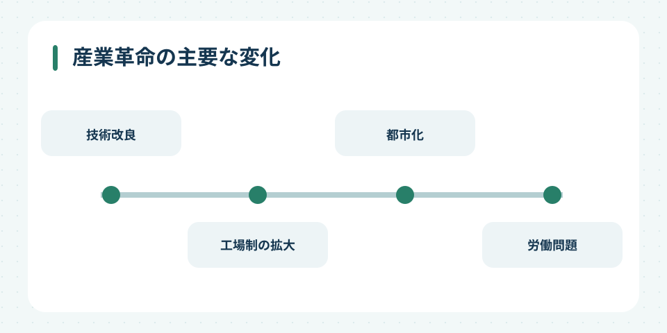

世界史 / UNIVERSITY ENTRANCE EXAM
産業革命とは？イギリスで始まった理由を整理
産業革命は機械の発明だけでなく、生産・人口・労働・都市のあり方を大きく変えた歴史的転換です。イギリスで始まった背景と影響を因果関係で整理します。
史
このページで学べること
18世紀の技術・社会・経済の変化。要点を読んだら、最後の確認問題で理解度をチェックしましょう。
POINT 01
18世紀後半のイギリスで進展

綿工業では紡績機や織機が改良され、生産性が上がりました。ジェニー紡績機、ウォーター・フレーム、ミュール紡績機などは代表例。ワットによる蒸気機関の改良は動力利用を広げました。
技術革新は一度に起こったのではなく、数十年かけて産業間に広がりました。
POINT 02
なぜイギリスだったのか
海外貿易の発展、石炭資源、資本の蓄積、農業の生産性向上、制度・市場の条件などが組み合わさりました。原因を一つだけに限定せず、資源・市場・資本・労働力の4点で考えると整理しやすくなります。
インドの綿製品との競争や植民地貿易など、世界的な経済関係も背景にありました。
POINT 03
社会への影響と新しい問題
工場制機械工業が広がり、都市への人口集中や賃金労働が進みました。一方、長時間労働や児童労働、劣悪な住環境などの問題も生じ、のちに労働運動や工場法などの対応につながります。
因果でつなぐ
機械化 → 工場生産の拡大 → 都市化・労働者の増加 → 社会問題と制度改革
PRACTICE
確認問題に挑戦！
全3問。答えを考えてから「解答と解説を見る」を押してね。
Q01
産業革命が最初に本格化した国は？
解答と解説を見る ＋
正解・解答例
イギリス
18世紀後半に綿工業を中心として進展。
Q02
ワットの主な功績は？
解答と解説を見る ＋
正解・解答例
蒸気機関の改良
蒸気機関自体をゼロから発明したわけではありません。
Q03
産業革命の労働問題への制度的対応の例は？
解答と解説を見る ＋
正解・解答例
工場法
児童労働・労働時間などの規制を進めました。
今日のまとめ
技術革新→工場制→都市化→社会問題の流れを、背景の条件とつなげる。
ここまで読めたら、ひと区切り。
理解できたら学習済みにチェックして、次の記事へ。
記事について
StudyMasterの無料学習コンテンツです。AIを補助的に用いて作成しています。例題・解答は公開前にご自身でも確認してください。内容に誤りがある場合は、学校の教科書などと照合してください。
公開・更新：2026年11月12日